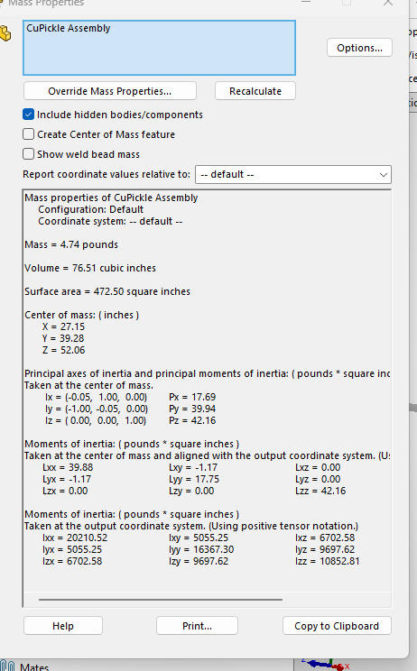

Appendix
Supporting files
Every activity cited in the design record is linked below. Survey responses and interview recordings are not posted because they involve human participants; their summaries are on Market Research.
Gate Review 3: detailed design
| File | What it contains | Used on |
|---|---|---|
| Activity 20: Design Drivers (PDF) | The original five design drivers and validation plans (roller-based driver 3) | Technical Development Methods |
| Activity 23: FMEA worksheet (XLSX) | Eight failure modes with S, O, D, RPN, actions and the root-cause write-up for RPN 392 | FMEA |
| Compression test analysis (XLSX) | Raw forces at 1–5 mm for 60 runs, ball means, t-tests, position-count accuracy, equations | Validation, Parameter Analysis |
| Activity 24: Mass-Manufacturing Plan (PDF) | MVP drawings, process sheets, tooling, assembly plan and production BOM | MVP |
| Activity 25: POC Fabrication Plan (PDF) | POC scope, MVP comparison, drawings, fabrication and assembly plans, BOM | POC |
| Prototyping Worksheet (PDF) | POC purpose, type, resources, stakeholders and evaluation plan | POC |
| Activity 26: Accessibility Analysis (PDF) | Readout barriers and the icon + word + sound redesign | Social Impact Evaluation |
| Activity 27: Design for Environment worksheet (PDF) | Life-cycle strategies and alternatives | Eco-audit |
| GRANTA eco-audit report (PDF) | Energy, CO₂ and cost by life stage and component | Eco-audit |
Engineering drawings
P02 Top Plate · P06 Carriage · P07 Anti-Rotation Rod · P10 Baseplate · P12 Press Plate · P13 Frame Post · P15 Load Cell Plate. The P14 peg and P16 cover drawings are shown on the POC page.

Gate Reviews 1 and 2
| Activity | Where it is on this site |
|---|---|
| Consumer survey and interviews (Activities 10a, 10b) | Market Research: survey, interviews |
| Customer journey map (Activity 11) | Customers & Benefits |
| QFD / House of Quality | Product Definition |
| Conceptualization, functional decomposition, concept tree | Conceptualization, Functional Decomposition, Concept Tree |
| Top concepts and downselection matrices | Top Concepts, Downselection |
| Activity 17: Emotional and aesthetic design; alpha prototype | Proposed Concept & Alpha Prototype |
| Earlier versions | Gate Review 1 version · Gate Review 2 version |